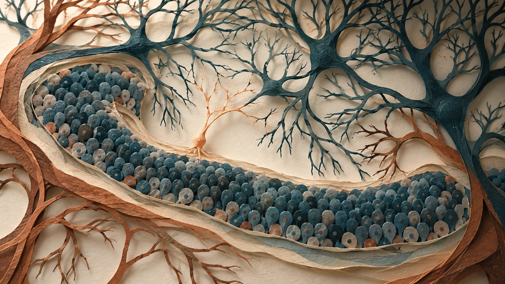
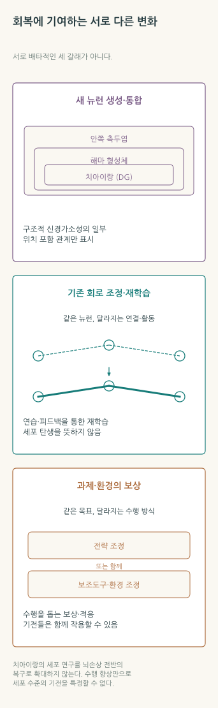
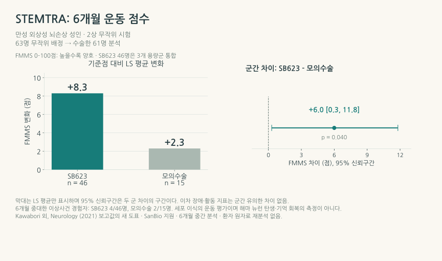
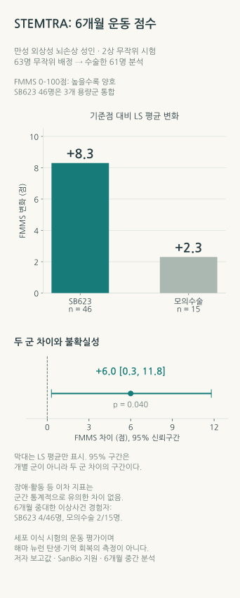

뇌의 회복을 다시 묻다: 성인 신경세포 생성과 재활의 과학
해마에서 발견된 새 세포는 어떻게 기능 회복의 가능성이 되는가—사람의 뇌 조직, 재활 임상시험과 세포치료가 밝힌 서로 다른 단계
RESEARCH REVIEW · 2026년 10월 30일 · 신경생물학·뇌손상·재활

내용 살펴보기
1. 핵실험이 남긴, 뇌세포의 생일
20세기 지상 핵실험은 대기에 방사성 탄소의 흔적을 남겼다. 그 탄소는 식물과 먹이사슬을 거쳐 사람의 몸에도 들어왔다. 수십 년 뒤 연구자들은 이 뜻밖의 연표를 꺼내 성인의 뇌세포가 언제 태어났는지 물었다. 세포가 분열하며 DNA를 만들 때 들어간 탄소를 당시 대기 농도와 대조하면, 조직 안에 살고 있는 세포의 나이를 추정할 수 있기 때문이다. 2013년 Kirsty Spalding과 동료들은 이 방법으로 성인 해마의 신경세포 집단에 평생 교체가 일어나는 부분이 있다는 결과를 보고했다. [1]
죽은 조직에서 세포의 생일을 읽어냈다는 사실은 놀랍다. 그러나 뇌가 회복되는 일을 생각하면, 곧 더 어려운 질문에 닿는다. 새로 태어난 세포는 살아남았을까. 어느 종류의 신경세포가 되었으며, 누구의 신호를 받아 누구에게 보냈을까. 그리고 그 변화 덕분에 사람이 어떤 일을 다시 할 수 있게 되었을까.
최근 New Scientist가 다룬 성인 뇌의 신경세포 생성은 바로 이 기대를 자극하는 주제다. 2025년과 2026년의 인간 해마 연구는 오래된 존재 논쟁에 새로운 분자·조직학적 근거를 보탰다. 이제 가능성을 평가하려면 세포의 탄생에서 회로의 작동, 일상의 회복까지 이어지는 과정을 읽어야 한다. [2]
성인 해마에서 새 신경세포가 만들어질 가능성과, 손상된 뇌의 기능을 회복시키는 치료의 효과는 서로 연결해 연구할 수 있는 별개의 질문이다. 현재 재활은 남아 있는 회로의 재학습과 과제·환경의 조정을 통해 기능을 돕고, 재생 연구는 그 회로를 생물학적으로 보완할 방법을 찾는다. 이 두 일을 함께 이해할 때 새로운 발견의 가치를 더 구체적으로 볼 수 있다.
2. ‘미성숙한 세포’와 ‘지금 태어나는 세포’ 사이
성인 신경세포 생성(adult neurogenesis)은 성숙한 뇌에서 신경 전구세포가 증식하고, 그 자손이 신경세포로 분화·성숙해 기존 회로에 참여하는 과정이다. 인간에서 특히 오래 연구한 장소는 학습과 기억에 관여하는 해마의 치아이랑(dentate gyrus)이다. 이 제한된 영역의 결과를 대뇌피질의 운동·언어 회로 전체가 같은 방식으로 다시 만들어진다는 뜻으로 읽을 수는 없다.
1998년 Peter Eriksson과 동료들은 생전에 암 진단을 위한 표지 물질 BrdU를 투여받았던 성인 다섯 명의 사후 해마에서, DNA 합성의 흔적과 신경세포 표지를 함께 가진 세포를 보고했다. 사람에게 연구 목적으로 출생 표지를 반복 투여하기는 어려우므로, 이런 드문 조직 자료와 방사성 탄소 연대측정은 서로 다른 종류의 단서를 제공했다. BrdU는 표지 시기에 일어난 DNA 합성을, 탄소 연대측정은 분리한 세포 집단의 DNA 나이와 교체 모형을 다룬다. [1,3]
논쟁은 어떤 표지를 새 세포의 증거로 받아들일지에서 되살아났다. DCX라는 단백질은 미성숙 신경세포를 찾을 때 자주 쓰지만, DCX 양성이라는 사실만으로 그 세포가 성인기에 막 태어났다고 날짜를 붙일 수는 없다. 오랫동안 미성숙 상태를 유지한 세포일 가능성도 검토해야 한다. Ki67은 세포가 증식 중임을 보여주는 표지이지만, 그 세포가 어떤 종류이며 나중에 무엇이 될지도 별도로 확인해야 한다. 한 시점에 관찰한 미성숙 세포 수에는 생성 속도뿐 아니라 미성숙 상태를 유지하는 시간, 생존과 검출 조건이 함께 반영된다.
2018년 Shawn Sorrells와 동료들은 유아기와 아동기를 거치며 인간 해마의 신경 생성이 급격히 줄어 성인 치아이랑에서는 어린 신경세포가 검출되지 않았다고 보고했다. 같은 해 Maura Boldrini와 동료들은 성인과 노인의 치아이랑에서 미성숙 신경세포가 지속된다는 결과를 발표했다. 2019년 Elena Moreno-Jiménez와 동료들의 연구는 조직을 고정하는 시간이 길어지면 관련 표지를 검출하기 어려워진다는 점을 실험적으로 보여주었다. [4,5,6]
이 차이를 단순히 한쪽의 승패로 정리하면 사람 뇌 연구의 어려움이 사라진다. 사망 전 상태와 질환, 조직을 얻는 위치, 사후 경과 시간과 고정, 항체의 특이성, 드문 세포를 분류하는 기준이 모두 관찰을 바꾼다. 새로운 연구가 중요한 이유도 하나의 표지를 더 밝게 찾았기 때문만은 아니다. 여러 방법이 같은 세포의 정체를 가리키는지 확인하기 시작했기 때문이다.
3. 2025년과 2026년, 무엇이 더 보였나
단일핵 분석도 처음부터 일치한 답을 내놓지는 않았다. 2022년 Franjic와 동료들의 종간 비교는 인간 치아이랑에서 뚜렷한 신경 생성 궤적을 찾지 못했다. 드문 세포를 얼마나 포착하고, 다른 종에서 배운 표지를 사람에게 어떻게 적용하는지가 이후 연구의 중요한 과제가 되었다. [7]
Ionut Dumitru와 동료들은 2025년 Science 논문에서 단일핵 RNA 분석과 조직 내 위치 확인, 기계학습 분류를 결합해 성인 인간 해마의 증식하는 신경 전구세포를 식별했다. 단일핵 RNA 분석은 세포핵 하나에서 어떤 유전자의 RNA가 발현되는지 읽어 세포의 종류와 상태를 추정하는 방법이다. 드문 전구세포를 찾기 위해 일부 표본은 증식 표지를 이용한 농축 과정을 거쳤다. [8]
연구는 어린이 여섯 명과 13–78세 열아홉 명의 자료를 분석했다. 어린이와 청소년·성인 자료를 합치면 402,660개 핵이다. 어린이 자료로 학습한 분류기를 청소년·성인의 286,799개 핵에 적용해 신경 전구세포 후보 354개를 식별했다. 큰 숫자 안에서 작은 집단을 찾아내는 일이 이 연구의 기술적 난점이다. 다만 이 354개를 하루에 태어나는 세포 수로 바꾸거나, 농축 조건이 다른 표본의 비율을 나이별 신경 생성 속도로 읽을 수는 없다. 연구진도 성인기의 세포 분열과 아주 이른 시기에 만들어져 천천히 성숙하는 세포가 각각 얼마나 기여하는지 후속 연구가 필요하다고 밝혔다. [8]
2026년 Ahmed Disouky와 동료들의 Nature 연구는 RNA에 더해 염색질 접근성을 읽었다. 염색질은 DNA와 단백질이 포장된 구조이며, 어느 부위가 열려 있는지는 유전자 조절 상태를 이해하는 단서가 된다. 연구진은 젊은 성인, 인지기능이 연령에 맞게 유지된 고령자, 뛰어난 일화 기억을 보이는 SuperAger, 전임상 병리 집단과 알츠하이머병 집단의 사후 해마를 비교했다. 자료는 38명의 사후 해마에서 얻은 355,997개 핵이다. 사람 사이의 차이를 판단하는 표본 수와 그 안에서 분석한 핵의 수는 구분해야 한다. [9]
여기서 신경 줄기세포, 신경모세포와 미성숙 과립세포에 해당하는 분자 상태가 식별되었고, 인지·병리 집단에 따라 유전자 조절 상태가 달랐다. 이는 어떤 세포 상태가 건강한 노화나 질환과 연관되는지 연구할 구체적인 표적을 제공한다. SuperAger의 생활습관이 신경 생성을 늘려 기억을 지켰다는 인과관계는 이 사후 횡단 비교로 결정되지 않는다. [9]
기계학습은 이 과정에서 현미경의 역할을 확장한다. 사람이 수십만 핵의 발현 양상을 직접 분류하기 어려우므로, 알려진 세포 상태와의 유사성을 계산해 희귀 후보를 찾는다. 그러나 분류에 쓰인 종과 연령, 표지 유전자와 참조 자료가 결과에 영향을 준다. RNA 상태를 정렬해 만든 발달 순서나, 새로 전사된 RNA와 가공된 RNA의 양으로 발현 변화의 방향을 추정하는 RNA velocity도 실제로 한 사람의 세포를 오랫동안 촬영한 영상과는 다르다. 분자적 연속성을 추정하는 계산이며, 세포의 출생과 후손을 직접 추적하는 계보 표지와 함께 해석해야 한다. [8,9]


그림 1의 출생·세포 상태에 관한 근거가 강해지면 회로 기능을 묻는 연구도 더 구체적으로 설계할 수 있다. 출생·성숙의 단서에 더해 어떤 연결을 만들고, 어떤 정보를 처리하며, 그 작동이 기능 변화의 원인인지 확인해야 한다. 인간의 살아 있는 뇌에서 이 연결을 세포 수준으로 반복 측정하는 방법이 아직 제한적이라는 점이 임상 번역의 큰 병목이다.
4. 새 세포 하나가 일을 하려면
치아이랑의 과립세포는 주변에서 들어오는 입력을 받고 다른 해마 영역으로 신호를 보낸다. 이 계통에서 논의되는 기능의 하나는 비슷한 경험을 서로 구별하는 패턴 분리(pattern separation)다. 어제 차를 세운 자리와 오늘의 자리를 혼동하지 않는 일을 생각하면 그 필요를 떠올릴 수 있다. 다만 그런 행동 검사 점수 하나로 사람이 새 신경세포를 몇 개 만들었는지 역산할 수는 없다.
세포를 더 만드는 것만으로 이 회로의 성능이 정해지지 않는다. 세포는 적절한 위치로 이동하고 살아남아야 하며, 수상돌기로 입력을 받고 축삭으로 적절한 표적에 출력을 보내야 한다. 흥분시키는 입력과 억제하는 입력의 조절, 학습할 때 활동하는 시점도 중요하다. 뇌손상은 세포체뿐 아니라 먼 영역을 잇는 축삭, 혈관과 세포 주변 환경에도 영향을 주므로, 한 영역의 세포 공급을 늘리는 일과 넓은 회로를 회복시키는 일에는 다른 과제가 남는다.
Laura Villasana와 동료들의 생쥐 피질충격 손상 모형 연구는 이 문제를 잘 보여준다. 손상 뒤 태어난 해마 신경세포는 전기적 활동과 시냅스 입력을 보였지만, 이동 위치와 수상돌기의 형태는 대조군과 달라졌다. 연구는 이 세포들이 회로에 참여할 수 있음을 보여주면서도, 달라진 배치가 정보 처리에 어떤 결과를 내는지 질문을 남겼다. 사람의 치료 효과를 관찰한 시험은 아니다. [10]
재생 능력이 더 큰 동물도 탄생과 기능의 시간이 일치하지 않는다. 2026년 Valerie Mariën과 동료들의 논문은 공개 초록에서 아프리카 청록 킬리피시의 뇌손상 모형을 보고했다. 연구진은 새 세포의 출생 표지, 전기생리와 학습된 회피 행동을 함께 연구했다. 세포가 성숙한 형태·전기적 성질을 갖추고 회로에 편입되는 과정은 행동 회복과 함께 진행되었으며, 충분한 회복에는 약 50일이 걸렸다. 대상 부위는 포유류 편도체에 대응하는 영역이다. 이 시간은 인간의 해마나 재활 일정으로 환산할 수 없지만, 조직이 채워지는 모습보다 기능 회복이 늦을 수 있다는 연구 질문을 선명하게 만든다. [11]
우리가 기대할 다음 단계는 세포 수의 최대화보다 필요한 세포가 필요한 회로에서 적절하게 작동하는 조건을 찾는 일이다. 이 관점에서는 세포가 살아갈 환경과 경험, 그 회로를 사용하는 재활이 재생 연구와 만날 이유가 생긴다. 두 접근의 결합이 어떤 환자에게 추가 이득을 주는지는 임상시험으로 확인할 문제다.
5. 재활은 이미 남아 있는 뇌와 함께 일한다
뇌가 경험과 손상에 반응해 구조와 기능을 바꾸는 성질을 신경가소성(neuroplasticity)이라고 한다. 새 신경세포의 생성·통합도 그 일부다. 재활에서 활용하는 가소성에는 기존 시냅스의 강도와 활동 양상의 변화, 전략의 학습과 다른 회로의 참여도 포함된다. 여기에 스마트폰 알림처럼 기억 부담을 바깥으로 옮기거나 과제의 순서를 바꾸는 방법이 더해진다. [12]
이를 같은 의미의 ‘뇌 재생’으로 묶으면 실제 성과를 놓치기 쉽다. 한 사람이 약속을 더 잘 지키게 되었을 때, 기억 저장 능력이 좋아졌을 수도 있고, 확인하는 습관과 알림 사용을 배웠을 수도 있다. 두 변화 모두 생활에 도움이 될 수 있지만, 필요한 훈련과 효과를 유지하는 조건은 다르다. 세포의 생성 여부와 기능적 이득은 각각의 적절한 방법으로 평가해야 한다.


중등도·중증 외상성 뇌손상 이후의 인지 재활을 다루는 INCOG 2.0 기억 지침은 개인의 실제 과제에 맞춘 전략 훈련과 외부 기억 보조도구를 강조한다. 예를 들어 전자 알림을 제공하는 데서 끝내지 않고, 필요한 상황에서 확인하고 사용하는 방법을 익히게 한다. 심한 기억장애에서는 오류를 줄이는 학습 방식과 일상 환경의 지원도 중요하다. 컴퓨터 연습의 성과 역시 실제 필요한 일에 전이되는지 확인해야 한다. [12]
임상 결과는 프로그램의 이름보다 어떤 변화를 측정했는지를 읽게 한다. TBI-MEM 무작위시험은 성인 69명을 맥락과 심상을 이용한 기억 전략 훈련군 35명과 위약 대조군 34명에 배정했다. 일부 이야기 기억과 과제에서 향상이 있었지만, 두 공동 일차 결과 중 단어 목록 학습 기울기에서는 유의한 차이가 없었다. 특정 전략의 유용성과 기억 전체의 회복을 구별할 이유다. [13]
더 큰 ReMemBrIn 시험은 성인 328명을 배정해 10주 집단 기억 재활을 통상 진료에 추가했다. 6개월 일상적 망각의 일차 결과에서 군간 이득은 입증되지 않았다. 조정 차이는 −2.1점, 95% 신뢰구간은 −6.7에서 2.5점으로, 차이 없음에 해당하는 0을 포함했다. 반면 개인 목표 달성 등에서는 차이가 보고되었다. 이 결과는 모든 기억 재활의 효과를 하나로 판정하기보다 대상과 전략, 참여 강도, 생활 전이를 각각 평가하게 한다. [14]
그림 2의 세 갈래를 치료의 우열 순서로 읽을 필요는 없다. 실제 생활에서 한 과제를 더 독립적으로 수행한다는 목표에는 생물학적 능력, 학습한 전략과 환경이 함께 기여한다. 성인 대상 시험을 다른 연령이나 서로 다른 손상 원인의 회복 전망에 그대로 적용해서도 안 된다. 재활의 목표·강도·시기는 손상 양상과 피로, 동반 증상에 맞춰 임상팀이 조정한다.
6. 세포치료는 이미 어디까지 왔나
‘뇌손상 세포치료는 모두 미래의 이야기’라는 문장도 현재의 상황을 정확히 전하지 못한다. 일본은 2024년 7월 31일 SB623, 성분명 vandefitemcel, 제품명 Akuugo를 외상성 뇌손상과 관련된 만성 운동마비의 개선에 대해 조건·기한부로 승인했다. 7년의 조건부 기간과 시판 후 평가가 붙어 있다. 2026년 10월 2일 첫 시판 후 투여가 이루어졌다는 공식 발표도 나왔다. [15,16]
이 제품은 가공한 동종 골수 유래 간엽계 세포를 뇌 안에 이식한다. 해마의 신경 전구세포를 채취해 넣는 치료와는 세포의 정체부터 다르다. 제안된 작용에는 분비 인자, 숙주 조직의 회복과 혈관·염증 환경에 대한 영향이 포함되며, PMDA도 작용 기전이 완전히 밝혀지지 않았다고 평가했다. 사람에서 이식 세포가 손실된 뉴런을 대체하고 정확한 회로를 복원했다는 결론을 승인 사실에서 끌어낼 수는 없다. [15]
근거가 된 STEMTRA 2상 시험은 손상 후 12개월 이상 경과한 성인의 만성 운동장애를 대상으로 했다. 63명이 무작위 배정되었고, 실제 수술을 받은 61명—세 용량군을 합친 세포군 46명, 모의수술군 15명—이 수정된 치료의도 분석에 포함되었다. 사지 운동 기능을 평가하는 Fugl–Meyer 운동척도(FMMS, 0–100점으로 높을수록 운동 기능이 양호)의 6개월 변화에 대한 조정 평균은 세포군 +8.3점, 대조군 +2.3점이었다. 군간 차이는 6.0점, 95% 신뢰구간 0.3–11.8점으로 보고되었다. 이는 특정 운동장애 집단에서 관찰한 임상 신호이며, 기억이나 전반적인 일상 독립성의 같은 크기 개선을 뜻하지 않는다. [17]


그림 3에서 점수의 방향뿐 아니라 구간의 폭도 읽어야 한다. 추정된 평균 효과는 양수이지만 작은 시험에서 얻은 불확실성이 남는다. 이차적인 장애·활동 지표는 유의한 군간 차이를 보이지 않았으며, 시험은 SanBio의 지원을 받았다. 모의수술은 실제 주입에 따른 조직 자극까지 같게 재현하지 않아, 세포 자체의 작용을 분리하는 데도 제약이 있다. 24주 중간 분석에서 중대한 이상사건은 세포군 46명 중 4명, 대조군 15명 중 2명에서 보고되었고, 수술 및 영상에서 확인한 출혈 관련 위험도 있었다. 효과와 위험을 더 큰 집단과 긴 관찰로 평가하는 일이 조건부 접근의 이유다. [15,17]
2024년에는 같은 시험의 48주 자료를 사후 분석했다. 전체 세포군에서 기준점 대비 운동 점수의 개선은 유지되었지만, +7.5점 대 대조군 +4.1점의 군간 차이는 유의하지 않았다(p=0.20). 장애·활동·일상기능 지표에서도 유의한 군간 차이를 확인하지 못했다. 5백만 세포 용량군의 탐색적 결과는 후속 연구의 가능성을 제시하지만, 새로운 독립시험이나 전체 세포군의 비교 결과를 대신하지 않는다. 48주까지 중대한 이상사건을 경험한 사람은 세포군 46명 중 4명, 대조군 15명 중 3명이었다. [18]
일본의 최신 첨부문서는 통상 성인을 사용 대상으로 하며, 손상 후 6개월 이상이 경과하고 운동기능장애가 고정된 중등도·중증 환자 등의 조건을 제시한다. STEMTRA는 손상 후 12개월 이상인 성인을 모집했으므로 임상시험의 모집 기준과 허가 후 사용 조건을 구분해야 한다. [15,17] 이 사례의 학술적 의미는 재생을 겨냥한 접근을 사람의 기능 지표로 시험하고 있다는 데 있다. 동시에 특정 제품의 조건부 접근, 임상 효과의 크기와 지속성, 새 뉴런이 매개했다는 기전 설명을 각각 평가해야 함을 보여준다.
7. 운동과 ‘뇌세포를 늘리는 방법’의 사이
성인 신경 생성이 알려지면 자연스럽게 무엇을 하면 늘릴 수 있는지 궁금해진다. 여기서는 연구가 측정한 대상을 먼저 살펴야 한다. 운동 후 해마 부피가 달라지거나 혈액에서 신경영양인자 BDNF가 달라졌다고 해서, 살아 있는 사람의 뇌에서 새 뉴런의 탄생을 직접 센 것은 아니다. 혈관, 세포의 형태와 여러 조직 성분이 영상 지표에 함께 기여할 수 있다.
자주 인용되는 2011년 시험은 고령 성인 120명의 1년 유산소 운동과 스트레칭을 비교해 운동군 해마 부피가 약 2% 증가했다고 보고했다. 이것은 인간의 구조적 가소성을 연구한 중요한 결과다. 다만 두 군의 기억 변화 차이는 유의하지 않았으며, 부피 변화와 일부 기억 결과의 연관을 새 뉴런이 매개한 효과로 확정하지 않았다. 대상도 뇌손상 재활 환자가 아니었다. [19]
2026년 9월의 NeuroFit 무작위시험은 이 번역 문제를 더 직접적으로 드러낸다. 건강한 45–65세 성인 52명을 12주 운동군 27명과 대조군 25명에 배정하고, 인지·기분과 함께 참가자의 혈청을 인간 태아 유래 해마 전구세포 배양에 처리했다. 사람에게서 얻은 혈액이 배양 세포의 행동을 어떻게 바꾸는지 보는 방법이다. 살아 있는 참가자의 해마에서 세포 출생을 측정한 검사는 아니다. [20]
일차 결과인 패턴 분리에서는 유의한 군간 변화 차이가 없었다. 우울 증상은 개선되었고, 배양 실험에서는 오히려 증식 표지 Ki67 양성 세포의 비율이 감소했다. 연구진은 장기적인 전구세포 유지와 관련된 조절일 가능성을 논의했지만, 그 설명은 후속 확인이 필요한 해석이다. 이 결과에서 인간 뇌의 신경 생성이 늘었다거나 줄었다고 단정할 수는 없다. [20]
이처럼 운동의 여러 이득, 특정 인지 과제의 변화, 혈청에 반응한 배양 세포의 변화는 관련성을 탐색할 수 있으면서도 같은 측정값은 아니다. 특히 뇌손상 뒤에는 운동의 종류와 강도를 개인의 상태에 맞춰 정한다. 일반적인 건강 연구의 자극적인 문구만으로 재활 프로그램이나 자가 치료 방법을 정하기 어렵다. 도움이 되는 임상 정보는 무엇을 했을 때 누구의 어떤 기능이 얼마나 달라졌는지를 함께 알려준다.
8. 다음 돌파구는 탄생과 사용을 함께 측정할 때
앞으로의 연구에서 첫 번째 어려움은 살아 있는 인간 뇌의 신경 생성을 얼마나 특이적으로 측정할 수 있는가다. 혈액 표지와 영상, 분자 분석은 반복 관찰의 가능성을 제공하지만, 각각이 세포 출생·생존·성숙 중 어느 과정에 대응하는지 먼저 검증해야 한다. 사후 조직에서 찾은 분자 상태를 살아 있는 사람의 경과와 연결할 수 있다면, 재활이나 치료가 작동하는 시기와 대상을 더 잘 구분할 수 있을 것이다.
두 번째는 기능적 편입의 질이다. 동물 연구에서는 새 세포를 표시하고 전기적 특성과 행동을 함께 측정하거나, 그 활동을 선택적으로 조절해 기능의 원인인지 시험할 수 있다. 인간에서는 직접 허용되는 관찰이 제한되므로 조직·영상·생리·임상 결과가 서로 보완해야 한다. 세포 수, 축삭의 방향, 흥분·억제 조절, 실제 학습의 변화를 연결하는 연구가 단순한 증식 촉진보다 유용한 치료 조건을 제시할 수 있다.
세 번째는 생물학적 개입이 재활에 더하는 이득이다. 앞으로 세포치료나 재생 촉진 방법을 시험할 때, 두 군 모두 받는 재활의 내용과 양, 손상 후 경과와 기능 수준을 기록해야 한다. 효과를 보여주는 검사 외에 일상의 과제와 참여, 지속성, 피로와 부작용까지 평가하면 어떤 변화가 삶에 남는지 알 수 있다. 새로운 세포와 학습 경험의 결합은 유망한 연구 방향이지만, 그 조합의 우월성은 같은 조건에서 비교해야 한다.
현재의 자료를 종합하면, 가까운 발전은 ‘뇌 전체를 다시 만드는’ 단일 기술보다 남아 있는 회로를 사용하는 재활과, 특정 생물학적 병목을 겨냥하는 치료를 더 정확히 맞추는 일에서 나올 가능성이 크다. 이는 이 리뷰의 전망이다. 세포를 보존하고 적절한 연결을 돕는 개입이 통상 재활에 지속적인 기능 이득을 더한다는 독립 임상 결과가 쌓이면, 그 전망은 더 구체적인 치료 전략으로 바뀔 수 있다.
대기 속 탄소는 세포가 태어난 시간을 알려주었다. 뇌가 다시 배우는 시간을 이해하려면, 그 세포가 누구와 연결되고 무엇을 하며 어떤 생활의 변화를 가능하게 하는지까지 물어야 한다. 성인 신경세포 생성의 발견은 그 긴 질문을 연구할 실제 대상을 주었다. 재활은 오늘도 그 질문의 다른 끝에서, 사람이 다시 할 수 있게 되는 일을 하나씩 확인하고 있다.
이 글은 공개 연구와 임상 근거를 설명하는 과학 리뷰다. 개인의 예후 판단이나 치료 처방은 다루지 않는다.
참고문헌
- [1]K. L. Spalding, O. Bergmann, K. Alkass, S. Bernard, M. Salehpour, H. B. Huttner, E. Boström, I. Westerlund, C. Vial, B. A. Buchholz, G. Possnert, D. C. Mash, H. Druid, and J. Frisén, Dynamics of hippocampal neurogenesis in adult humans, Cell 153, 1219 (2013).
- [2]J. Ducharme, Your brain’s unexpected ability to regenerate and how to harness it, New Scientist (26 October 2026).
- [3]P. S. Eriksson, E. Perfilieva, T. Björk-Eriksson, A.-M. Alborn, C. Nordborg, D. A. Peterson, and F. H. Gage, Neurogenesis in the adult human hippocampus, Nat. Med. 4, 1313 (1998).
- [4]S. F. Sorrells, M. F. Paredes, A. Cebrian-Silla, K. Sandoval, D. Qi, K. W. Kelley, D. James, S. Mayer, J. Chang, K. I. Auguste, E. F. Chang, A. J. Gutierrez, A. R. Kriegstein, G. W. Mathern, M. C. Oldham, E. J. Huang, J. M. Garcia-Verdugo, Z. Yang, and A. Alvarez-Buylla, Human hippocampal neurogenesis drops sharply in children to undetectable levels in adults, Nature 555, 377 (2018).
- [5]M. Boldrini, C. A. Fulmore, A. N. Tartt, L. R. Simeon, I. Pavlova, V. Poposka, G. B. Rosoklija, A. Stankov, V. Arango, A. J. Dwork, R. Hen, and J. J. Mann, Human hippocampal neurogenesis persists throughout aging, Cell Stem Cell 22, 589 (2018).
- [6]E. P. Moreno-Jiménez, M. Flor-García, J. Terreros-Roncal, A. Rábano, F. Cafini, N. Pallas-Bazarra, J. Ávila, and M. Llorens-Martín, Adult hippocampal neurogenesis is abundant in neurologically healthy subjects and drops sharply in patients with Alzheimer’s disease, Nat. Med. 25, 554 (2019).
- [7]D. Franjic et al., Transcriptomic taxonomy and neurogenic trajectories of adult human, macaque, and pig hippocampal and entorhinal cells, Neuron 110, 452 (2022).
- [8]I. Dumitru, M. Paterlini, M. Zamboni, C. Ziegenhain, S. Giatrellis, R. Saghaleyni, Å. Björklund, K. Alkass, M. Tata, H. Druid, R. Sandberg, and J. Frisén, Identification of proliferating neural progenitors in the adult human hippocampus, Science 389, 58 (2025).
- [9]A. Disouky, M. A. Sanborn, K. R. Sabitha, M. M. Mostafa, I. A. Ayala, D. A. Bennett, Y. Lu, Y. Zhou, C. D. Keene, S. Weintraub, T. Gefen, M.-M. Mesulam, C. Geula, M. Maienschein-Cline, J. Rehman, and O. Lazarov, Human hippocampal neurogenesis in adulthood, ageing and Alzheimer’s disease, Nature 652, 1264 (2026).
- [10]L. E. Villasana, K. N. Kim, G. L. Westbrook, and E. Schnell, Functional integration of adult-born hippocampal neurons after traumatic brain injury, eNeuro 2, ENEURO.0056-15.2015 (2015).
- [11]V. Mariën, C. Zandecki, J. Van Houcke, A. Maes, R. Ayana, C. Van den Haute, R. Gijsbers, M. Tognolina, and L. Arckens, Morphological maturation and circuit integration of adult-born neurons are key to functional recovery after traumatic brain injury, Proc. Natl. Acad. Sci. U.S.A. 123, e2607510123 (2026).
- [12]D. Velikonja, J. Ponsford, S. Janzen, A. Harnett, E. Patsakos, M. Kennedy, L. Togher, R. Teasell, A. McIntyre, P. Welch-West, A. Kua, and M. T. Bayley, INCOG 2.0 guidelines for cognitive rehabilitation following traumatic brain injury, Part V: Memory, J. Head Trauma Rehabil. 38, 83 (2023).
- [13]N. D. Chiaravalloti, J. Sandry, N. B. Moore, and J. DeLuca, An RCT to treat learning impairment in traumatic brain injury: The TBI-MEM trial, Neurorehabil. Neural Repair 30, 539 (2016).
- [14]R. das Nair, L. E. Bradshaw, F. E. C. Day, A. Drummond, S. R. S. Harris, D. Fitzsimmons, A. A. Montgomery, G. Newby, C. Sackley, and N. B. Lincoln, Clinical and cost effectiveness of memory rehabilitation following traumatic brain injury: A pragmatic cluster randomized controlled trial, Clin. Rehabil. 33, 1171 (2019).
- [15]Pharmaceuticals and Medical Devices Agency, Review Report, Akuugo Suspension for Intracranial Implantation (15 March 2024); Ministry of Health, Labour and Welfare, Report on the Deliberation Results (19 June 2024); サンバイオ株式会社, アクーゴ脳内移植用注, 第1版 (May 2026).
- [16]サンバイオ株式会社, 「アクーゴ®脳内移植用注」市販後１例目の投与実施のお知らせ (5 October 2026).
- [17]M. Kawabori et al., Cell therapy for chronic TBI: Interim analysis of the randomized controlled STEMTRA trial, Neurology 96, e1202 (2021).
- [18]D. O. Okonkwo et al., Mesenchymal stromal cell implants for chronic motor deficits after traumatic brain injury: Post hoc analysis of a randomized trial, Neurology 103, e209797 (2024).
- [19]K. I. Erickson, M. W. Voss, R. S. Prakash, C. Basak, A. Szabo, L. Chaddock, J. S. Kim, S. Heo, H. Alves, S. M. White, T. R. Wojcicki, E. Mailey, V. J. Vieira, S. A. Martin, B. D. Pence, J. A. Woods, E. McAuley, and A. F. Kramer, Exercise training increases size of hippocampus and improves memory, Proc. Natl. Acad. Sci. U.S.A. 108, 3017 (2011).
- [20]S. Farmand, C. Kim, A. Du Preez, A. O. Werneck, L. Batzu, D. Pearce, K. Brady, M. Khir, S. Nicolas, J. F. Cryan, Y. M. Nolan, B. Stubbs, and S. Thuret, Effects of a three-month exercise programme on cognition, mood and neurogenesis: The NeuroFit randomised controlled trial, npj Aging 12, 124 (2026).